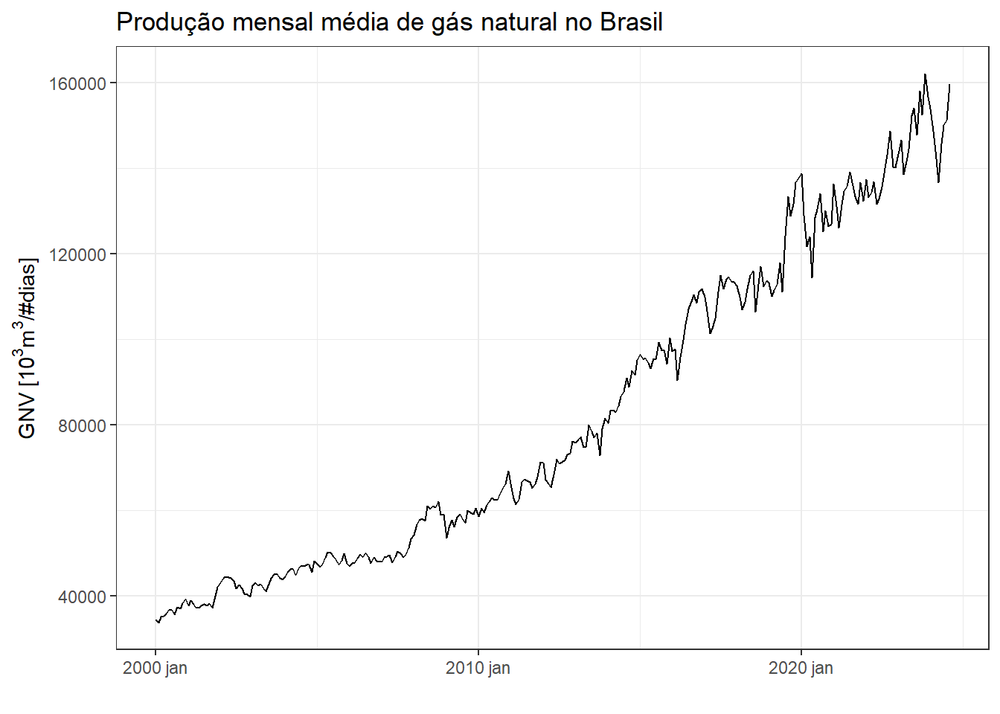
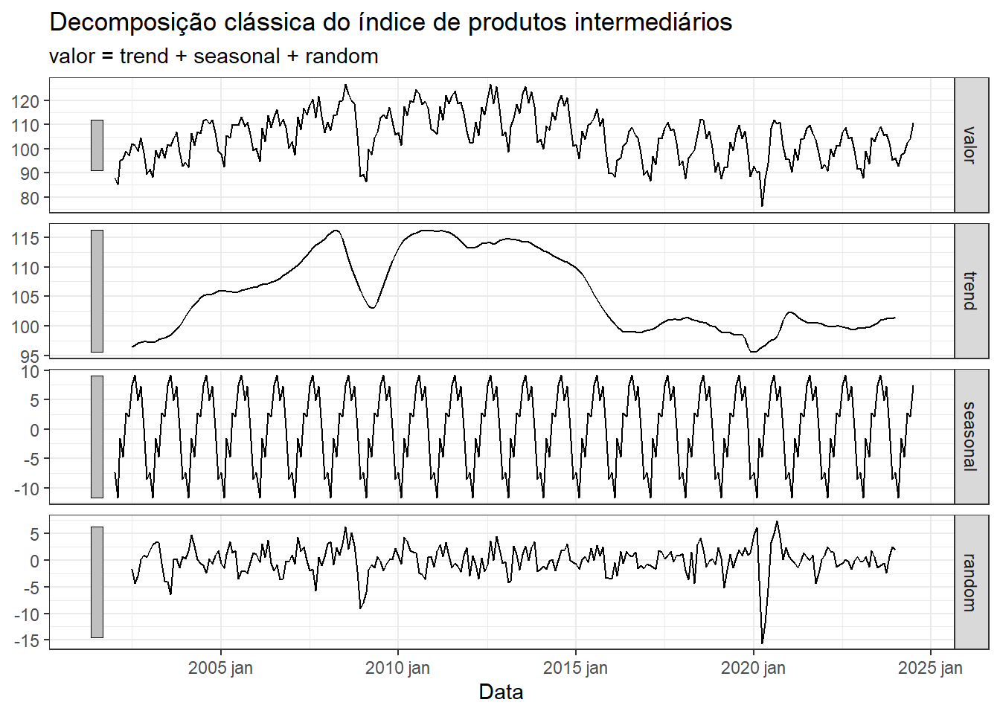
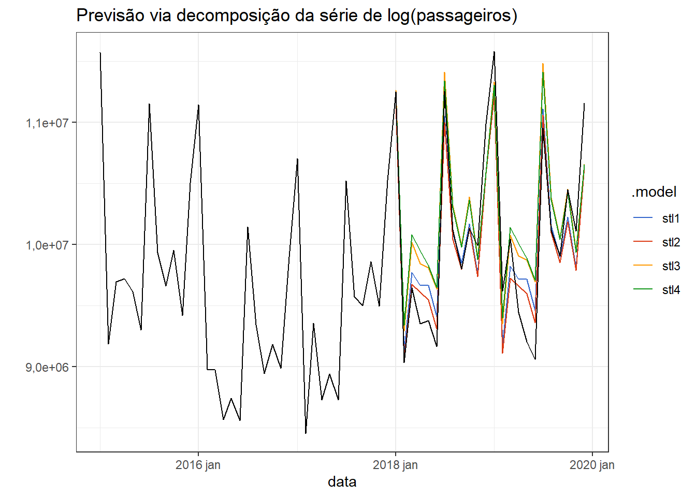

3 Decomposição de séries temporais
3.1 Decomposição
As séries temporais exibem comportamentos variados. A decomposição destas pode facilitar a análise e previsão. Geralmente considera-se a tendência, sazonalidade e o resto na decomposição, havendo vários métodos para separar tais componentes. Antes, porém, são importantes algumas considerações sobre tratamentos iniciais às vezes necessários.
3.1.1 Ajustes e transformações
Alguns ajustes são comumente necessários antes de realizar a decomposição de uma série temporal. Por exemplo, em alguns casos é importante corrigir a sazonalidades devido à diferenças de calendário. Em séries que exibem alguma variável com frequência mensal, pode haver alguma sazonalidade nos meses com número menor de dias, sendo interessante talvez trabalhar com a média mensal, dividindo a variável pelo número de dias de cada mês.
Dados relacionados à população também podem ser ajustados per capita, ou por pessoa. Este ajuste é muito comum no PIB e em outras variáveis econômicas, por exemplo. Em séries relacionadas a disponibilidade de algum serviço para a população é mais fácil avaliar a disponibilidade ajustando os dados por mil pessoas, por exemplo, de forma a eliminar o efeito do crescimento populacional. O mesmo pode ser feito para séries de saúde pública, por exemplo de número de pessoas infectadas ou a mortalidade pode ser dividida por 1000 ou 100 mil, dependendo da ordem de grandeza de cada série, de forma a viabilizar comparação entre populações de localidades distintas. Em séries econômicas às vezes é importante considerar a inflação, de forma a dar uma dimensão real da série, permitindo comparação em diferentes momentos. Para deflacionar uma série basta dividí-la pelo deflator, um índice que corrige a inflação.
Transformações como a de Box-Cox ou outra mais simples também podem ser úteis para facilitar o tratamento da série. Conforme visto anteriormente, uma série que exibe uma variação sazonal não constante, ou heterocedástica, ao ser transformada pode exibir um padrão de sazonalidade de mais fácil decomposição ou tratamento.
A série plotada na Figura 3.1 consiste na produção mensal de gás natural no Brasil a partir os anos 2000. A série está disponível em Dados estatísticos - Agência nacional de petróleo.
A Figura 3.2 plota novamente a série considerando a normalização por número de dias no mês.

A série normalizada é submetida a uma transformação de Box-Cox de forma a corrigir a heterocedasticidade, com \(\lambda=-0.06\), sendo o resultado plotado na Figura 3.3.
3.2 Componentes de uma série
Assumindo uma decomposição aditiva, pode-se escrever:
\[ y_t = S_t+ T_t+R_t, \]
onde \(S_t\) é a componente sazonal, \(T_t\) é a tendência e \(R_t\) é o resto no período \(t\). No caso multiplicativo tem-se:
\[ y_t = S_t \times T_t \times R_t \]
O caso multiplicativo é ideal quando a variação em séries sazonais muda com o tempo, seguindo padrão heterocedástico.
A série plotada na Figura 3.4 exibe o índice de produção física mensal de bens intermediários, ou seja, aqueles empregados na produção de produtos finais, tais como produtos minerais, produtos metalúrgicos, têxteis, papel e celulose, produtos químicos, borracha, plásticos, componentes elétricos e eletrônicos.

A Tabela 3.1 exibe as primeiras linhas das componentes da série, considerando a decomposição aditiva.
| name | .model | Data | value | trend | season_year | remainder | season_adjust |
|---|---|---|---|---|---|---|---|
| intermediarios | stl | 2002 Jan | 87.97245 | 95.10887 | -7.0894994 | -0.0469214 | 95.06195 |
| intermediarios | stl | 2002 Feb | 85.22869 | 95.33164 | -11.1630761 | 1.0601292 | 96.39177 |
| intermediarios | stl | 2002 Mar | 94.94150 | 95.55440 | 0.8473573 | -1.4602601 | 94.09414 |
| intermediarios | stl | 2002 Apr | 96.00238 | 95.77717 | -2.0387398 | 2.2639509 | 98.04112 |
| intermediarios | stl | 2002 May | 99.12757 | 95.99987 | 3.8247141 | -0.6970134 | 95.30286 |
| intermediarios | stl | 2002 Jun | 97.15759 | 96.22257 | 1.7226365 | -0.7876163 | 95.43495 |
A série é plotada novamente na Figura 3.5 com a tendência em destaque. Observam-se dois períodos de queda mais acentuada relativos à crise de 2008/2009 e à pandemia de COVID-19.
As componentes são plotadas separadamente na Figura 3.6.
3.3 Dados com sazonalidade ajustada
Pode ser útil remover a sazonalidade da série, resultando em uma série com sazonalidade ajustada. Para casos aditivos a série resultante seria dada por \(y_t-S_t\), enquanto que para casos multiplicativos seria \(y_t/S_t\).
Na Figura 3.7 plota-se a série de produtos intermediários ajustada sazonalmente.

3.4 Média móvel
Um dos métodos clássicos para estimar a tendência é a média móvel. Uma média móvel de ordem \(m\) pode ser escrita como segue.
\[ \hat{T}_t=\frac{1}{m}\sum_{j=-k}^{k} y_{t+j} \]
Denota-se uma média móvel como \(m\)-MA, ou média móvel de ordem \(m\). A título de exemplo seja a série \(5,10,12,20,23,27\). Considerando \(k = 2\), tem-se uma média móvel de ordem \(m=5\), 5-MA. Para este caso, seguem os cálculos das médias móveis para a terceira e quarta observações, \(t=3,4\). Observa-se que o \(k\) determina o número de observações não suavizadas no ínico e fim da série.
\[ \hat{T}_3=\frac{1}{2\times2+1}(5+10+12+20+23)=14 \]
\[ \hat{T}_4=\frac{1}{2\times2+1}(10+12+20+23+27)=18,4 \]
Na Figura 6.5 observa-se graficamente a média móvel com diferentes ordens, para a série de volume de carros produzidos no Brasil. Quando maior a ordem da série, mais suave o resultado.
É interessante em alguns casos realizar a média móvel de uma média móvel, com o objetivo final de centrar médias móveis pares. Uma média móvel \(2\times4\)-MA consiste em uma média móvel \(4\)-MA seguida de uma \(2\)-MA.
Por exemplo, para a série da Tabela 3.2 o problema da média móvel \(4\)-MA é que ela não é simétrica em relação à série original, tendo uma observação não estimada no início e duas no final. Ao tomar desta série resultante uma média móvel de ordem \(2\)-MA, resultando na \(2\times4\)-MA, tem-se uma série média móvel simétrica com a original, com duas observações ausentes no início e fim.
| Série | \(4\)-MA | \(2\times4\)-MA |
|---|---|---|
| 5 | ||
| 10 | 11,75 | |
| 12 | 16,25 | 14 |
| 20 | 20,5 | 18,375 |
| 23 | 25 | 22,75 |
| 27 | ||
| 30 |
3.5 Estimando a tendência com dados sazonais
Ao realizar uma média móvel \(2\times4\)-MA, a estimativa feita ao final fica conforme a Equação abaixo, consistindo em uma média ponderada.
\[ \hat{T}_t=\frac{1}{8}y_{t-2}+\frac{1}{4}y_{t-1}+\frac{1}{4}y_{t}+\frac{1}{4}y_{t+1}+\frac{1}{8}y_{t+2} \]
Este modelo pode ser usado para estimar tendência de séries com sazonalidade quadrimestral, por exemplo. Recomenda-se usar uma média móvel de ordem \(2\times m\)-MA para estimar a tendência de uma série com sazonalidade de ordem \(m\).
Na Figura 3.9 observa-se novamente a série de índice de produção de itens intermediários plotada sazonalmente. Como ficou clara a sazonalidade anual, pode-se pensar na suavização de ordem \(2\times 12\)-MA.

A Figura 3.10 exibe a série do índice de produção de produtos intermediários com média móvel \(2\times 12\)-MA. Pode-se confirmar que a sazonalidade foi eliminada. A tendência estimada é muito similar à obtida anteriormente com método mais sofisticado.
3.6 Decomposição clássica
A decomposição clássica tem um século de tradição e é o primeiro método para tal. Ela contempla a forma aditiva e a multiplicativa. A seguir são expostos os passos para a decomposição aditiva:
Se o período sazonal, \(m\), é par, estime a tendência \(\hat{T}_t\) como uma média móvel \(2\times m\)-MA. Se \(m\) é ímpar, estime a tendência com uma média móvel \(m\)-MA.
Calcule a série sem a tendência, \(y_t - \hat{T}_t\).
Calcule a componente sazonal para cada estação como a média de todos os períodos desta. Por exemplo, para uma série com sazonalidade anual. O mês de janeiro terá como valor de \(\hat{S}_t\) a média de todas as observações de janeiro. O procedimento é realizado para todos os meses.
Calcule o resto tomando a diferença da série em relação à tendência a sazonalidade, \(\hat{R}_t=y_t - \hat{T}_t - \hat{S}_t\).
A Figura 3.11 expõe o resultado gráfico da decomposição clássica da série de produtos intermediários. Pode-se observar que neste caso a sazonalidade é constante, diferente do resultado óbtido com método mais sofisticado.

Passos para a decomposição multiplicativa.
Se o período sazonal, \(m\), é par, estime a tendência \(\hat{T}_t\) como uma média móvel \(2\times m\)-MA. Se \(m\) é ímpar, estime a tendência com uma média móvel \(m\)-MA.
Calcule a série sem a tendência, \(y_t / \hat{T}_t\).
Calcule a componente sazonal para cada estação como a média de todos os períodos desta. Por exemplo, para uma série com sazonalidade anual. O mês de janeiro terá como valor de \(\hat{S}_t\) a média de todas as observações de janeiro. O procedimento é realizado para todos os meses.
Calcule o resto tomando a razão da série em relação à tendência e à sazonalidade, \(\hat{R}_t=y_t / (\hat{T}_t \times \hat{S}_t)\).
A Figura 3.12 plota o número de passageiros em vôos no Brasil, disponível em Dados Abertos da Agência Nacional de Aviação Civil (ANAC).
Observa-se na Figura 3.13 sazonalidade anual com picos nos períodos de férias escolares, em Julho e Dezembro/Janeiro.
A Figura 3.14 expõe o resultado gráfico da decomposição clássica multiplicativa da série de passageiros em vôos no Brasil.

3.7 Métodos usados por agências de estatística
O método X-11 é discutido em Dagum & Bianconcini (2016). Possibilita a decomposição aditiva e a multiplicativa, é robusto a altas variações e outliers e a estimativa de tendência é disponível em toda série. O método também captura outras formas de sazonalidade e feriados.
A Figura 3.15 exibe o resultado da decomposição aditiva pelo método X-11 na série do índice de produção de produtos intermediários.

O método SEATS consiste em uma decomposição sazonal de séries temporais por ARIMA (ARIMA será discutida futuramente) e foi proposto pelo Banco da Espanha. A Figura 3.16 expõe o resultado gráfico do método SEATS para decompor a série de passageiros em vôos do Brasil.
3.7.1 Decomposição via STL
A sigla STL significa Seasonal and Trend decomposition using Loess”* que em português seria decomposição de tendência e sazonalidade usando LOESS, enquanto LOESS é um método de regressão não linear, locally estimated scatterplot smoothing, ou em tradução livre suavização por regressão local.
O método STL apresenta diversas vantagens em relação aos anteriores:
- Trata qualquer tipo de sazonalidade;
- A componente sazonal pode mudar com o tempo;
- A suavização da tendência pode ser controlada pelo usuário;
- Pode ser robusto a outliers (há uma opção para tal), de forma que desvios não usuáis não afetarão a tendência e ciclo, mas o resto.
O método, entretanto, tem algumas limitações. As possibilidades elencadas são disponíveis apenas para decomposições aditivas. Para casos multiplicativs, recomenda-se trasnformar a série via logaritmo e depois fazer a decomposição aditiva.
A Figura 3.17 expõe os gráficos da decomposição do logarítmo da série de passageiros em vôos do Brasil.
3.7.2 Previsão via decomposição
A Figura Figura 3.18 apresenta a previsão via decomposição para o caso anterior. Foi considerado até o ano de 2018 para treinamento e pode-se observar a previsão para 2019 e 2020 junto com as observações disponíveis.

A Figura 3.19 apresenta os resíduos obtidos da decomposição para o caso anterior. Observa-se que apresentam boa aderência à normal e sem presença de autocorrelação.